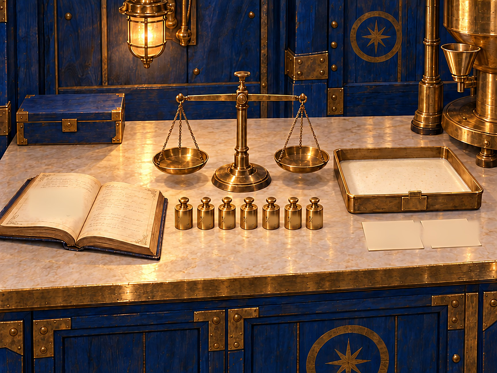
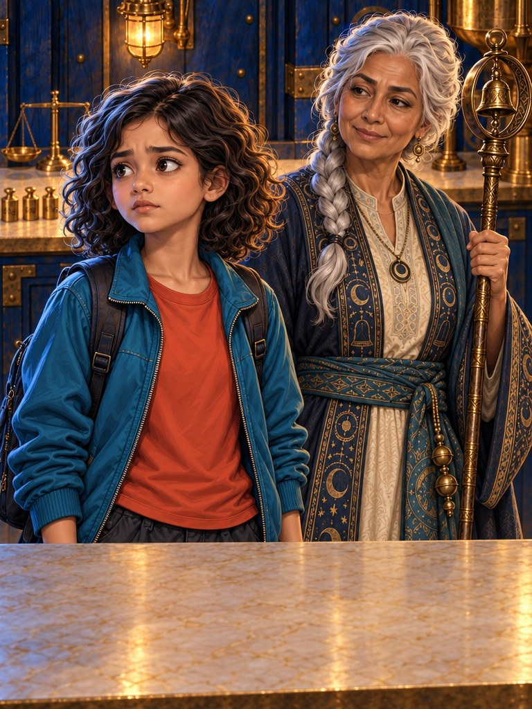
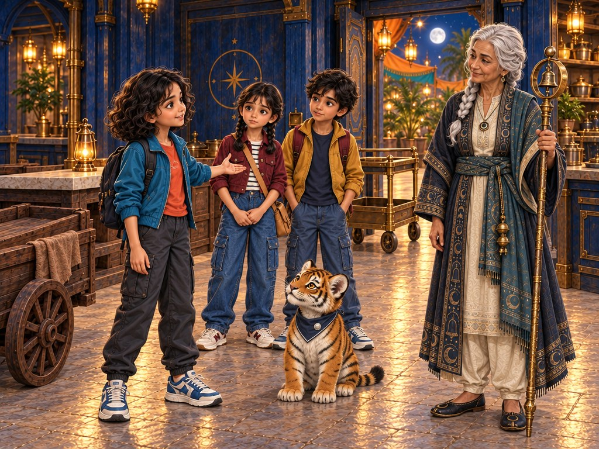
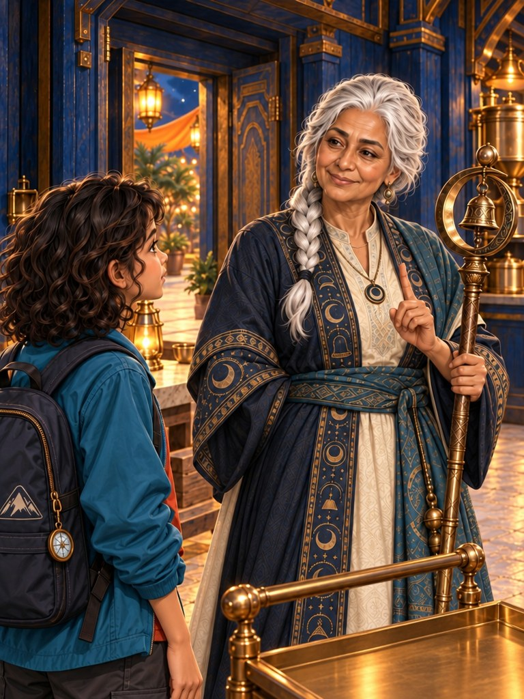
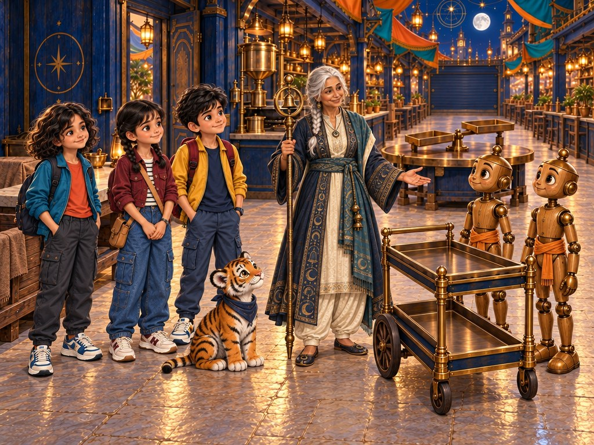

The book is kept in a cupboard beneath the counter. The helper brings it out, along with the scale and weights it uses to measure ingredients. The children will not have to trust one loose label over another. They can check the actual food as well.

Before they begin, Ahana looks back towards the Gate.


